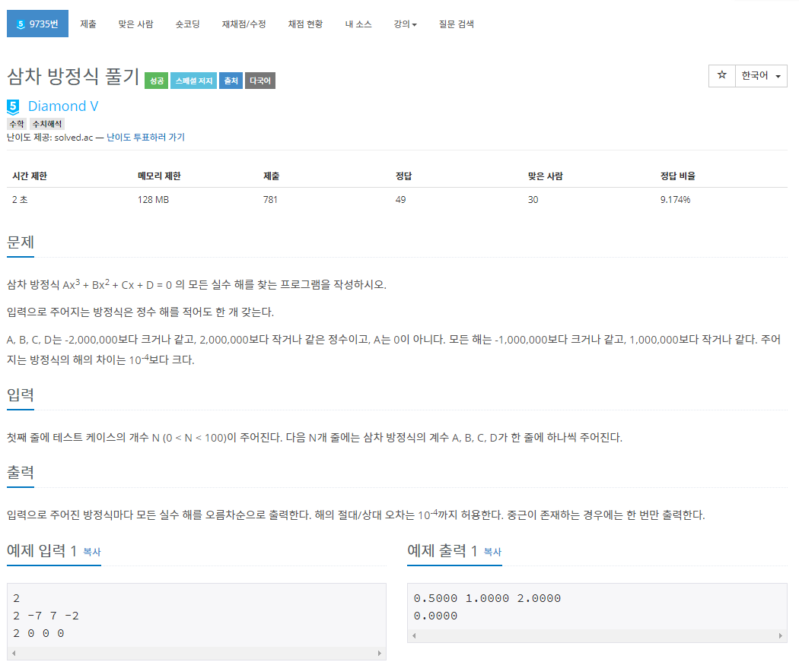

BOJ 9735 삼차 방정식 풀기 Kotlin 풀이
[9375] 삼차 방정식, 코틀린으로 풀어보자
문제 소개
이번에 풀어볼 문제는 9735번 삼차 방정식 풀기 입니다.썸네일과 다르게 현재는 플레1로 떨어졌다고합니다.

문제 접근
근의 공식
처음 이 문제를 보자마자 삼차 방정식은 이미 근의 공식이 나와있으니 공식에 대입해서 문제를 풀면 되는줄 알고 공식에 대입해보려 했지만
해의 절대/상대 오차는 10^-4까지 허용한다
라는 말이 있는것으로 보아서 오차 문제는 아닌것같고… 제가 어딘가 놓친것 같습니다.
식이 엄청나게 길거든요.
그래서 다른 방법을 시도해봤습니다.
이차 방정식으로 차수 낮추기
문제 조건
문제를 다시 읽어보세요.
엄청난 조건이 숨어있습니다.
바로 입력으로 주어지는 방정식은 정수 해를 적어도 한 개 갖는다인데요
이 조건이 있기 때문에 항상 Ax^3 + Bx^2 + Cx + D = 0 식을(x + a)(bx^2 + cx + d) = 0 꼴로 인수분해가 가능하다는게 보장됩니다!!
그럼 고등학교 수준에서 문제를 해결할 수 있습니다.
문제 풀이
보장된 정수 해 찾기
그럼 이제 보장된 정수 해가 하나있으니 이를 찾아봅시다.
저는 사실 유리근 정리 를 사용해서 문제를 해결하려고 시도했었습니다.
유리근 정리는 무엇일까요?
저 삼차 방정식에서 ±(D의약수) / (A의약수) 중에 정수 해가 하나 있다는 뜻이죠.
반복을 돌면서
1 | val (a, b, c, d) = readLine()!!.split(" ").map { i -> i.toInt() } |
정수 해 1개를 x1에 담아냅니다.
이 중 .map을 이용해서 ±(D의약수) / (A의약수)를 구하고 방정식에 넣어서 0이 되는지 확인하는 코드죠.
작동은 합니다만 문제가 있었습니다.
이 방식은 A와 D에 따라서 시간 소요가 너무 많이 됩니다..
다른 방식을 찾아야합니다!
정수 해 메모리 초과 해결
A, B, C, D는 -2,000,000보다 크거나 같고, 2,000,000보다 작거나 같은 정수이고, A는 0이 아니다. 모든 해는 -1,000,000보다 크거나 같고, 1,000,000보다 작거나 같다. 주어지는 방정식의 해의 차이는 10^-4보다 크다.
이 말은 정수 해니까 저희가 아무리 반복을 많이 돌아도 (-2,000,000~2,000,000) 만 돌면 해결되니까 생각보다 많은 처리량은 아님을 알 수 있습니다.
그래서 직접 돌기로했습니다.
1 | when (d) { |
돌면서 직접 식에 넣어보고 0이 되는지 확인할껀데 혹시 모를 수 범위 초과를 피하기 위해서 양변을 x로 나눠서 진행했습니다.
그 다음 2차 방정식의 해를 구할 차례입니다!
이차방정식의 해를 구해보자
우선 아까 한 정수해를 구한다면 Ax^3 + Bx^2 + Cx + D = 0식을
\[(x - x_1)(Ax_1^2 + (Ax_1 + B)x + (Ax_1 + B)x_1 + C)\]
으로 변형 할 수있는데요.
이는 조립제법에서 얻어진 결과입니다. (인수분해도 똑같이 나와요)
이제 저희는 식을 이차 방정식으로 분해했고 답은 실수 해만을 출력하기 때문에 저희에게는 2가지 경우가 있습니다
판별식
판별식이란 이차방정식의 계수들 간의 관계식으로, 그 근의 성질에 대한 정보를 알려 줍니다.
쉽게 말해서 판별식을 D(b^2 - 4ac)라고 할 때
| 판별식 D | 근의 개수 |
|---|---|
| D > 0 | 서로 다른 두 실근 |
| D == 0 | 서로 같은 두 실근(중근) |
| D < 0 | 서로 다른 두 허근 |
저희는 이미 정수해를 하나 가지고있고 D < 0가 아닌 경우에는 근의 공식을 사용하고 중복을 제거하고 정수 해와 합치면 답이겠네요.
근의 공식!
1 | fun formula(a: Double, b: Double, c: Double) = |
formula함수에서 판별식을 구하고, 중복을 제거하는 distinct()를 사용해서 D < 0만 거르고 중복을 제거했어요!
정답 형식에 맞게 String.format("%.4f", n + 0.0)을 이용해서 소수점 4자리까지 표시하도록 셋팅했습니다.
이것으로 문제가 풀렸습니다.
정답 코드
1 | fun main(args: Array<String>) { |
결론
지금 글 쓰는 시점에서 다른 분의 코드를 보니 Kotlin 제출자는 저를 제외하고는 한분 계시는데 엄청 깔끔하게 문제를 푸셨으니 한번 문제 풀이에 여러가지 방법으로 도전하시고 다른 분의 코드를 참고해보세요!
이 문제를 풀고 골드로 승급했습니다. 😂
문제 출처: 백준, https://www.acmicpc.net/problem/9735